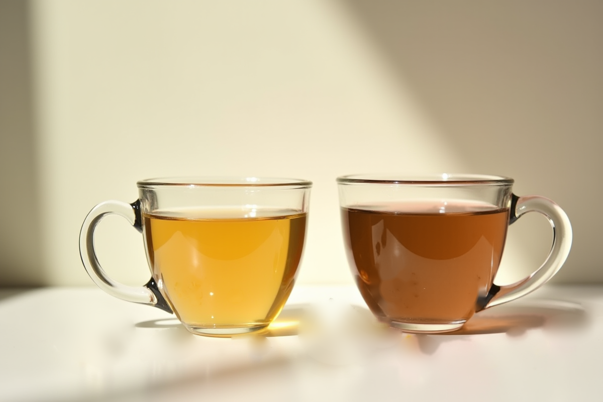

원료Ingredients
원료 낱개 판매는 순서대로 열립니다. 지금은 키트로 시작해 주세요. 원료별 「입고 알림 신청」을 남기면 열리는 대로 안내드립니다.
Same leaves, different joys
같은 원료도, 즐기는 법은 다릅니다.
원료 하나하나의 성격을 알면 블렌딩이 쉬워집니다. 각 원료의 향 · 바디 · 여운, 우리는 온도와 시간, 들어가는 추천 블렌드는 원료를 눌러 확인하세요.

원료 낱개 판매는 순서대로 열립니다. 지금은 키트로 시작해 주세요. 원료별 「입고 알림 신청」을 남기면 열리는 대로 안내드립니다.
원료 하나하나의 성격을 알면 블렌딩이 쉬워집니다. 각 원료의 향 · 바디 · 여운, 우리는 온도와 시간, 들어가는 추천 블렌드는 원료를 눌러 확인하세요.
